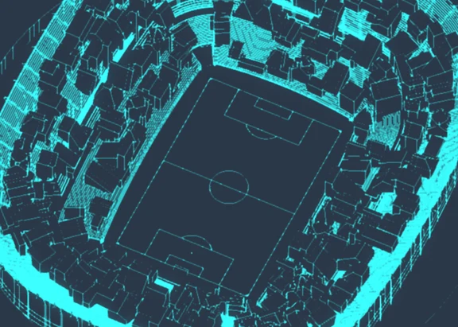
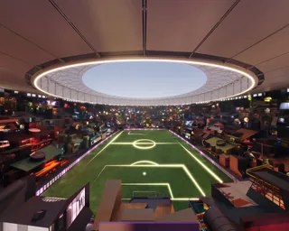
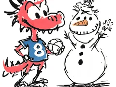
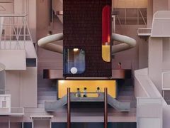
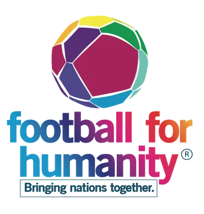
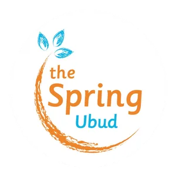
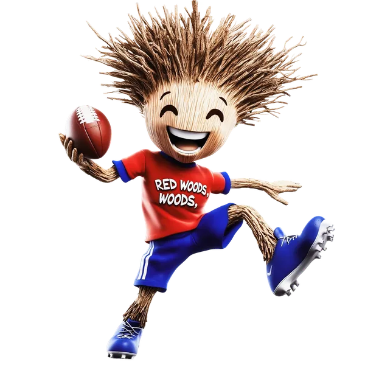
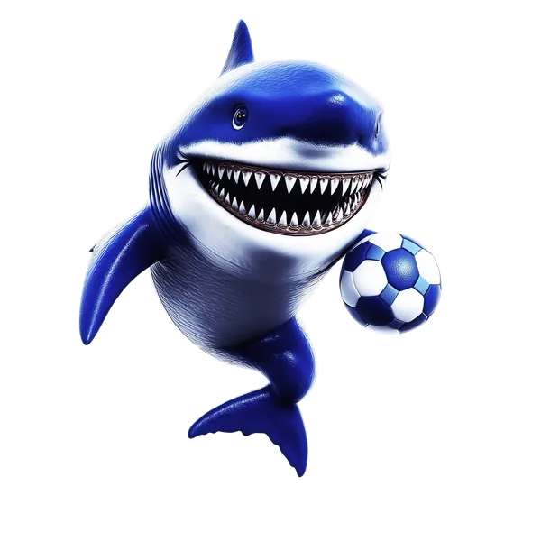

where the game begins
Children sketch the vision. We shape it — together.

3D is not available in this browser.
a place
  
football as common ground.
architecture as shared care.
Already in the game
Made in collaborations with


How it works
-
In workshops and after-school labs, children imagine their own clubs. They choose a name, colours and crest, sketch players, and write short rituals or chants. We listen first. Consent, care and safeguarding sit at the centre.
-
Designers and mentors translate the sketches into models—paper, clay, then digital. Nothing is “corrected”; we follow the child’s intent and check back for approval. Each team receives a small visual toolkit (badge, palette, type, textures).
-
Every team’s “house” is placed in a shared virtual stadium. Profiles open on the site; some clubs pair with ambassadors and develop limited kits based on the drawings. Funds raised support partner foundations using football for social good, and progress is shared in the Journal.
Participate

For teams, community centres and NGOs. We run a lab where children draw their vision. As Creator For designers, architects, illustrators, 3D artists. Join a lab, help translate drawings into models. As Patron
For individuals and partners who wish to fund the work. Fund a lab or sponsor a team’s kit.Tribune’s magazine
It started with drawings.
Kids sitting on the floor, sketching stadiums with tilted goalposts, rooftops like wings, and flags made of sun.
Not copying the world—but rewriting it. I’m an architect. I’m trained to think in structures and plans.
But when I sat with these children, I realised: The most important thing I could build wasn’t a stadium. It was a space to be seen.
Tribune is that space. A place where children imagine their own football clubs—each with its own name, colours, rituals, and crest.
They draw themselves as players, creatures, captains. Each sketch holds a piece of who they are, or who they dream to be.
We don’t refine their ideas. We follow them.
Designers and 3D artists turn these sketches into digital homes—placing each team’s house in a shared virtual stadium.
Every house is different. Every house belongs.
Once the stadium is full, each team will be paired with an ambassador. Limited-edition kits, based on the kids’ drawings, will be released—one for each team.
They’ll be auctioned or collected, with proceeds donated to foundations working with children in vulnerable places, using football as a language of care.
But this project isn’t about kits or collectors. It’s about what happens when a child’s vision is carried, not corrected.
When imagination becomes architecture. That’s the kind of stadium I want to keep building.